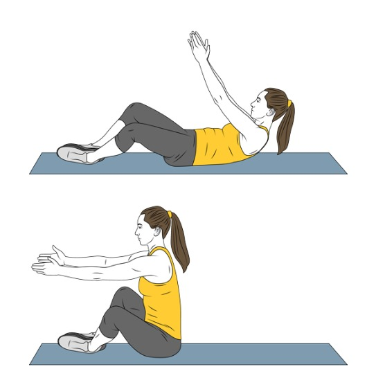
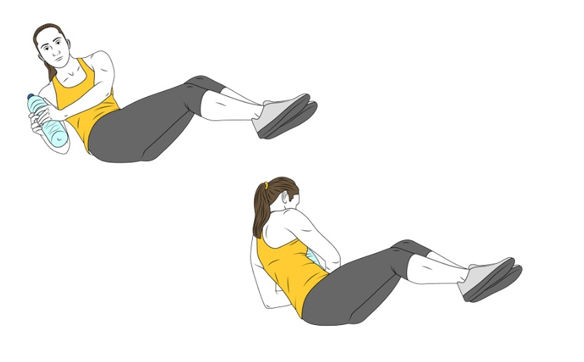
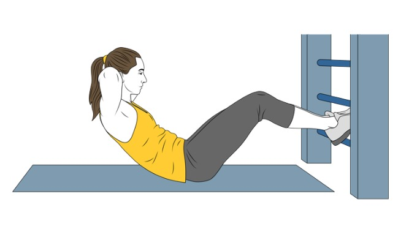
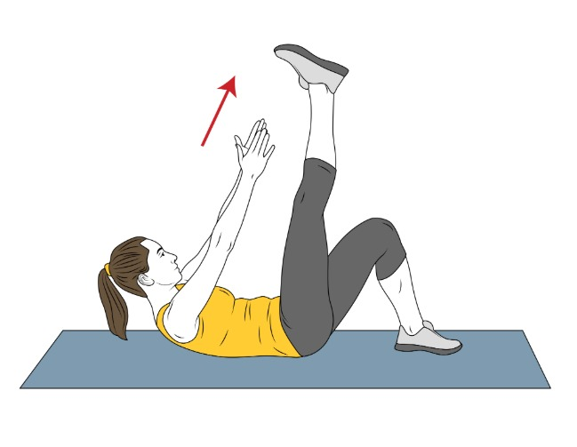

Realiza una de estas actividades durante 30 minutos para activar el cuerpo:
| Tiempo | Ritmo estimado | Velocidad aprox. | Objetivo |
|---|---|---|---|
| 0–5 min | Paso cómodo | 4–5 km/h | Calentamiento |
| 5–10 min | Paso activo | 5.5 km/h | Activación cardiovascular |
| 10–15 min | Paso rápido | 6–6.5 km/h | Quema de grasa |
| 15–20 min | Paso muy rápido | 6.5–7 km/h | Sudor y respiración agitada |
| 20–25 min | Paso rápido | 6–6.5 km/h | Mantener intensidad |
| 25–30 min | Paso relajado | 4.5–5 km/h | Enfriamiento |
| Tiempo | Nivel de resistencia | Objetivo |
|---|---|---|
| 0–5 min | Nivel 2–3 | Calentamiento, ritmo suave |
| 5–10 min | Nivel 4–5 | Empiezas a sudar |
| 10–15 min | Nivel 6–7 | Esfuerzo intenso pero estable |
| 15–20 min | Nivel 4 | Ritmo moderado |
| 20–25 min | Nivel 7–8 | Como subir una cuesta |
| 25–30 min | Nivel 2–3 | Enfriamiento, ritmo suave |
🔧 Si tu bici va del 1 al 20, multiplica los niveles de la tabla por 2.
📌 Si no tiene números:
🎯 Consejo de intensidad:
Haz 3 rondas de los siguientes ejercicios.
En cada ronda haz 20 repeticiones por ejercicio.
Túmbate boca arriba, rodillas flexionadas, pies apoyados. Manos detrás de la cabeza o cruzadas sobre el pecho. Eleva el torso sin tirar del cuello, y baja controlando.
Repeticiones: 3×20
Desde la posición inicial, sube el torso y gira hacia la derecha, intentando acercar el codo izquierdo a la rodilla derecha.
Repeticiones: 3×20
Mismo ejercicio, pero girando hacia la izquierda (codo derecho hacia rodilla izquierda).
Repeticiones: 3×20
Túmbate con las piernas elevadas en ángulo recto (90°). Realiza crunches normales manteniendo esa posición.
Repeticiones: 3×20
Túmbate boca arriba. Sube y baja las piernas estiradas sin que toquen el suelo. Se puede hacer una pierna y luego la otra.
Repeticiones: 3×20
